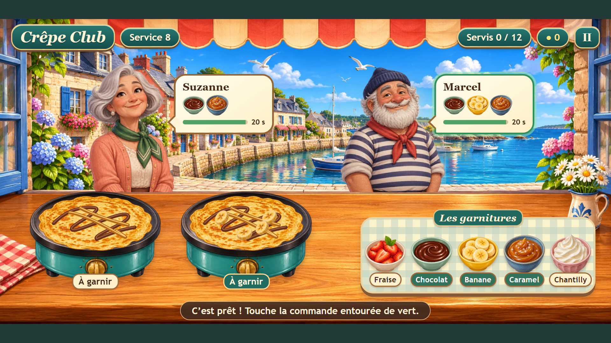

Une cuisson à maîtriser
Attends le signal vert pour retourner ta crêpe et décrocher un pourboire.
Cuisine • Android • Hors ligne
La pâte dore, les clients arrivent et les commandes se précisent. Retourne tes crêpes au bon moment, compose les garnitures et sers les habitués avant qu’ils perdent patience.
La sortie sur Google Play est en préparation.
Nous contacter
Attends le signal vert pour retourner ta crêpe et décrocher un pourboire.
Fraise, chocolat, banane, caramel et chantilly se combinent au fil des huit services.
Apprends sur une plaque, puis jongle entre deux cuissons et des clients plus pressés.
Une question, un retour ?
Pour l’assistance, un problème dans le jeu ou une question sur tes données.